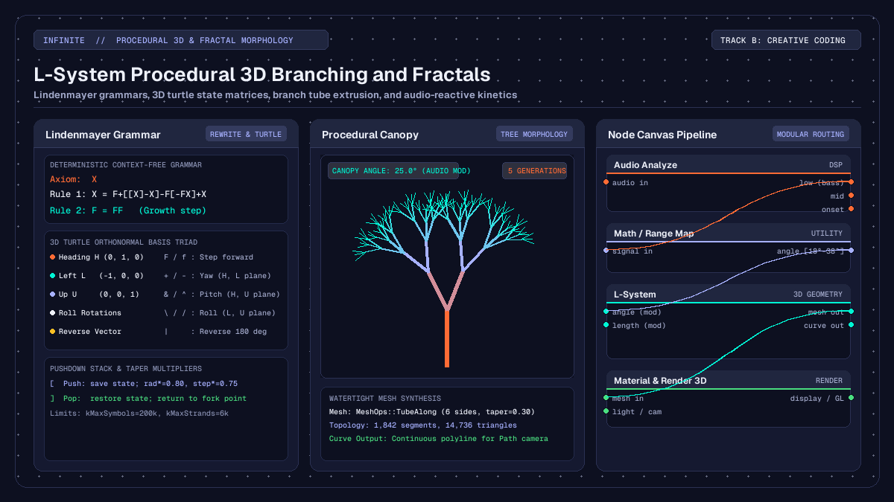

Creative
L-system procedural 3D branching and fractal generation
How to build procedural 3D trees and fractals using l-system procedural 3d branching, 3D turtle geometry, mesh extrusion, and real-time audio modulation in Infinite.

on this page
An l-system procedural 3d branching architecture brings the algorithmic elegance of formal rewriting grammars into real-time computer graphics and modular audiovisual performance. In traditional generative design, procedural geometry often relies on explicit loops, mathematical trigonometric functions, or Perlin noise fields. While noise produces organic displacement and sine waves yield predictable oscillation, neither method captures the developmental morphology of living organisms: structured self-similarity, hierarchical vascular branching, and recursive form unfolding across space and time.
In modular workstations like Infinite, the Lindenmayer system bridges formal language theory, three-dimensional geometry, and live sound design. By evaluating production rules inside a native L-System node, creative coders can grow intricate botanical canopies, generate procedural coral and crystal formations, and modulate geometric growth parameters live using incoming audio frequencies.
Here is how Lindenmayer grammars operate, how three-dimensional turtle geometry navigates space, how branch strands are swept into watertight polygonal tubes, and how to patch audio-reactive procedural trees on a unified canvas.

Formal grammars and parallel rewriting
The mathematical foundation of Lindenmayer systems was developed in 1968 by Hungarian theoretical biologist and botanist Aristid Lindenmayer. Originally formulated to study the growth patterns of multicellular algae, mosses, and vascular plants, L-systems belong to the family of formal rewriting grammars.
In classical Chomsky grammars used across compiler design, production rules are applied sequentially, replacing one non-terminal symbol at a time. In contrast, an L-system applies its replacement rules in parallel across every symbol in the string simultaneously. This parallel replacement reflects biological cell division, where multiple biological structures grow and divide at the same physical instant.
A deterministic context-free L-system (known formally as a DOL-system) is defined by three components:
- Alphabet: A finite set of formal symbols
Vcontaining characters that can be replaced or walked by a geometry interpreter. - Axiom: An initial seed string
omegaof symbols chosen fromVthat defines the starting state of the organism. - Production rules: A mapping
Pthat associates predecessor characters with successor replacement strings.
Consider the canonical branching plant grammar:
Axiom: X
Rules: X = F+[[X]-X]-F[-FX]+X; F = FFDuring generation zero, the system state consists solely of the axiom X. In the first generation, the production rule replaces X with its successor:
Generation 0: X
Generation 1: F+[[X]-X]-F[-FX]+X
Generation 2: FF+[[F+[[X]-X]-F[-FX]+X]-F+[[X]-X]-F[-FX]+X]-FF[-FFF+[[X]-X]-F[-FX]+X]+F+[[X]-X]-F[-FX]+XAs iterations advance, the length of the string increases exponentially. In the native L-System node inside Infinite, string expansion is governed by safety caps:
- The maximum number of generations is bounded by
kMaxIterations = 10. - The total rewritten symbol buffer is capped at
kMaxSymbols = 200000.
If a grammar expands beyond the symbol limit, rewriting terminates cleanly and issues a diagnostic notification. This safety ceiling guarantees that complex grammars never exhaust host memory or block real-time rendering during live performances.
Turtle geometry in three dimensions
Once a string of symbols is rewritten, it must be translated into spatial form. This translation is performed by a three-dimensional turtle geometry interpreter, extending Seymour Papert's original two-dimensional Logo turtle into Cartesian space.
The turtle maintains an internal state consisting of a spatial position (px, py, pz) and three mutually orthogonal unit vectors that form an orthonormal frame in three dimensions:
- Heading vector
H: points in the direction the turtle is currently facing and moving forward. - Left vector
L: points to the local left side of the turtle. - Up vector
U: points along the local normal vector perpendicular to the heading and left vectors.
The orientation triad satisfies the cross-product relationship:
H x L = UAs the interpreter parses the rewritten symbol string from left to right, each character commands the turtle to move or reorient its local frame:
F: Move forward by the current step length while drawing geometry.f: Move forward by the current step length without drawing geometry, creating intentional structural gaps.+: Turn left by the branching angle, spinning vectorsHandLaround axisU.-: Turn right by the branching angle, spinning vectorsHandLin the opposite direction around axisU.&: Pitch down by the branching angle, spinning vectorsHandUaround axisL.^: Pitch up by the branching angle, spinning vectorsHandUin the opposite direction around axisL.\: Roll left by the branching angle, spinning vectorsLandUaround axisH./: Roll right by the branching angle, spinning vectorsLandUin the opposite direction around axisH.|: Reverse direction by 180 degrees, inverting the heading vector.
Because repeated floating-point matrix rotations accumulate subtle numerical errors over thousands of symbols, Infinite executes an orthonormal renormalisation step following each rotation:
void Renormalize(Turtle& t)
{
float* v[3] = { t.h, t.l, t.u };
for (float* x : v)
{
const float len = std::sqrt(x[0] * x[0] + x[1] * x[1] + x[2] * x[2]);
if (len > 1e-6f)
for (int i = 0; i < 3; i++)
x[i] /= len;
}
}This normalisation guarantees that the turtle orientation vectors never shear or collapse, maintaining geometric fidelity across deep recursive iterations.
Branching stacks and hierarchical state
Botanical forms require branching structures where subsidiary twigs diverge from parent boles while preserving the original growth trajectory. In L-systems, this hierarchy is encoded through pushdown automata symbols:
[: Push the current turtle state onto a lifo stack. The saved state includes spatial coordinates(px, py, pz), orientation frame vectorsH,L,U, current branch radius, and current step length. The branch radius is then multiplied byradiusScale, and the step length is multiplied bylengthScale.]: Terminate the active branch and pop the saved turtle state from the stack, restoring the parent branch position, frame orientation, radius, and step length.
Through this stack mechanism, a single linear string encodes complex tree canopies with nested sub-branches of proportional thickness and length.
Tube extrusion and branching radii
Drawing wireframe polylines produces an informative schematic, but visual rendering demands solid three-dimensional geometry with surface normals, cross-sectional volume, and UV mapping for material shaders.
The native L-System node solves this by sweeping each continuous branch strand into a watertight polygonal cylinder via MeshOps::TubeAlong.
Strand points -> Cylindrical cross-sections -> Triangular quad strips -> Watertight meshKey physical parameters govern this mesh synthesis:
sides: Controls the radial polygon count of the cross-sections, adjustable between 3 (producing low-poly crystalline trunks) and 24 (producing smooth organic boughs).radius: Sets the absolute base radius of the primary trunk.radiusScale: The geometric multiplier applied toradiuseach time a sub-branch is pushed with[. A value of0.75ensures parent limbs are sturdier than daughter branches, mirroring Leonardo da Vinci's botanical rule of trees.taper: Governs linear narrowing along the length of each strand segment, ensuring branches taper toward their terminal buds rather than ending abruptly as blunt cylinders.lengthandlengthScale: Control the physical reach of the primary trunk and the rate at which daughter twigs shorten toward the perimeter.
To prevent GPU memory saturation during live performances, Infinite enforces a hard cap of kMaxStrands = 6000 extruded tubes. Any additional branches beyond this limit remain present in the polyline curve but are excluded from polygonal mesh extrusion.
Dual mesh and polyline representations
A distinctive design decision of the L-System node is its dual output contract: it concurrently provides both a three-dimensional polygonal Mesh and a continuous three-dimensional Polyline.
L-System Node
├── GetMesh() -> Watertight 3D polygonal geometry (tubes, vertices, normals, UVs)
└── GetCurve() -> Continuous 3D polyline path (reconstructed traversal points)This dual pipeline opens versatile creative workflows:
- Polygonal mesh rendering: The mesh connects directly to standard 3D rendering pipelines, accepting PBR materials, casting shadow maps, and responding to scene lighting.
- Path tracking and camera choreography: The
Polylineoutput connects to thePathnode. Because the turtle traverses the tree in deterministic order, aCamera 3Dcan be constrained to glide along the polyline path, flying smoothly through the interior vascular channels of the fractal tree canopy. - Particle flow guides: Downstream simulation nodes can distribute emitters or flow particles along the polyline curve, creating glowing sap rising through procedural veins.
Real-time audio modulation and kinetic foliage
Because Infinite evaluates its node graph in real time, the parameters of the L-System node can be dynamically modulated by audio analysis or control signals. Unlike pre-rendered 3D assets, a procedural grammar can breathe and pulse in direct synchronisation with music.
Consider the following audio-reactive modulation pairings:
Modulating branching angles with frequency bands
By connecting the low-frequency band of an Audio Analyze node to the angle parameter of L-System, the physical divergence of the tree branches expands and contracts in response to bass transients:
- At quiet moments (
angle = 18.0), branches align closely with the primary trunk, producing a slender, dormant cypress form. - On heavy kick drum or bass hits (
angle = 38.0), branches fan outward into an open, blossoming canopy.
Because changing the branching angle preserves the total number of vertices and triangles, angle modulation incurs zero memory allocation overhead, running at full display frame rates without dropped frames.
Modulating length and scale with melodic envelopes
Connecting mid-range or high-frequency energy to lengthScale dynamically alters the density of the outer foliage. When a synth arpeggio or percussion roll plays, outer branches extend outward and recoil, giving the tree an organic breathing kinetic presence.
Modulating growth iterations across musical sections
The iterations parameter governs structural complexity. Routing a slow step sequencer or an arrangement automation curve to iterations allows a seed to sprout at generation 1 during an ambient intro, expand to generation 3 in the first verse, and erupt into a fully unfurled generation 5 fractal canopy at the musical drop.
Composing procedural scenes in Infinite
To assemble a finished audiovisual composition, the L-System node is wired into the standard 3D rendering graph alongside lighting and camera nodes.
Audio In ──────────> Audio Analyze ──[Low Band]──> Math ──> L-System (angle)
│
[Mesh Output]
│
Light 3D ──> Scene 3D ─────────────────────────────────────> Material ──> Render 3D ──> Viewport
▲
Camera 3D ──────────────────────────────────────────────────────────────────┘Here is the step-by-step assembly process:
- Add the audio chain: Place an
Audio Innode, wire it intoAudio Analyze, and extract thelowoutput band. Route this through aMathnode to map incoming zero-to-one signal ranges into the desired angular span, such as20.0to40.0degrees. - Add the generator: Place an
L-Systemnode. Connect the scaled audio signal into theangleparameter input. Set theaxiomtoXandrulestoX=F+[[X]-X]-F[-FX]+X;F=FF. Setiterationsto 4 or 5. - Apply materials: Wire the mesh output into a
Materialnode. Assign a deep organic albedo colour, setroughnessto0.65for natural wood scattering, and configure a subtle emissive tint modulated by high-frequency audio energy. - Set up lighting and camera: Connect the material into a
Render 3Dnode. Add aCamera 3Dpositioned at(0.0, 1.5, 4.0)targeting the centre of the tree canopy. Add twoLight 3Dnodes: a warm directional key light and a cool cyan rim light to highlight branch contours against the dark ground. - Combine with shaders: In Infinite, you can pair 3D geometry with 2D post-processing. Take the render output and composite it with background gradients or real-time GLSL shaders for depth of field and atmospheric haze.
To explore pre-configured templates and community patches featuring procedural geometry, visit the patch library.
Algorithmic variations and botanical grammars
The flexibility of Lindenmayer systems lies in their grammatical versatility. By modifying the axiom and replacement rules, the exact same node architecture generates fundamentally distinct natural forms.
Classic 3D bush
This classic grammar produces balanced spherical shrubbery with uniform outward branching:
Axiom: A
Rules: A = [&+F[A]][&-F[A]][^+F[A]][^-F[A]]; F = FF
Angle: 28.0The four-way branch split combines pitch (&, ^) and yaw (+, -) rotations, producing full three-dimensional volumetric foliage.
Monopodial pine tree
For coniferous trees where a dominant central trunk continues upward while subordinate whorls emerge at regular intervals:
Axiom: !(1)F(100)/(45)A
Rules: A = [&(30)B]F(10)/(45)A; B = [&(30)F(20)]F(10)/(45)B
Angle: 25.0Here, the primary trunk maintains vertical dominance while lateral branch clusters spiral radially around the central stem.
3D Hilbert space-filling curve
L-systems are not limited to biological plants; they also describe space-filling fractals and recursive mathematical curves:
Axiom: X
Rules: X = ^\XF^/XFX-F^//XFX&F+//XFX-F/X-
Angle: 90.0When evaluated with 90-degree turning angles, this grammar weaves a single continuous polyline through every sub-cube of a three-dimensional lattice. When swept into tubes and modulated with audio, it creates intricate kinetic geometric sculptures.
For broader techniques combining mathematical deformation with procedural meshes, see our guide on procedural 3D geometry nodes.
Summary
L-system procedural 3D branching provides an expressive bridge between theoretical linguistics, computer graphics, and live music performance. By encoding complex natural structures into concise symbolic grammars, artists can generate organic botanical forms that remain entirely deterministic, mathematically pure, and lightweight.
Through Infinite's native L-System node, these formal grammars live inside an interactive modular graph. Artists can manipulate branch cross-sections, route geometry along motion paths, and modulate angles and lengths in real time to the rhythm of incoming audio. The result is a procedural instrument where mathematics, sound, and visual form grow together on a single canvas.